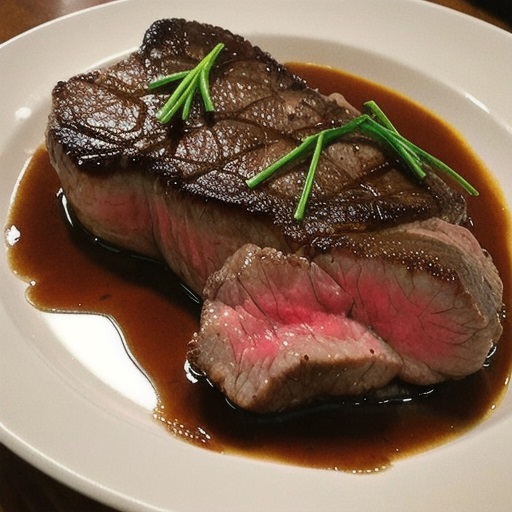

Pan-Seared Steak

Description
A perfectly juicy and tender steak makes for an excellent main dish for any celebratory evening or casual dinner at home.
Ingredients
- Two 1-pound boneless rib-eye or strip steaks, 1 to 1-1/2 inches thick
- 2 tablespoons vegetable oil
- 2 tablespoons unsalted butter
- Kosher salt
- Freshly ground black pepper
- 4 sprigs fresh thyme
- 2 large shallots, finely sliced
Steps
- Pat steaks dry with paper towels and season generously with salt and pepper on all sides.
- Heat oil in a 12-inch cast-iron or stainless steel skillet over high heat until smoking. Add steaks and cook, occasionally flipping the over, until both sides have developed a light brown crust, about 6 minutes.
- Add the butter, thyme, and shallots to the pan and continue to cook, turning the steaks frequently until they are deep brown on both sides and the center of the steaks registers 120°F for medium-rare or 130°F for medium on an instant-read thermometer.
- Transfer steaks to a large plate, tent with foil, and allow to rest for 5 minutes before slicing in half and serving one half-pound steak per person.
- Serve steak with a pan sauce, compound butter, Béarnaise sauce, or Dijon mustard as desired.